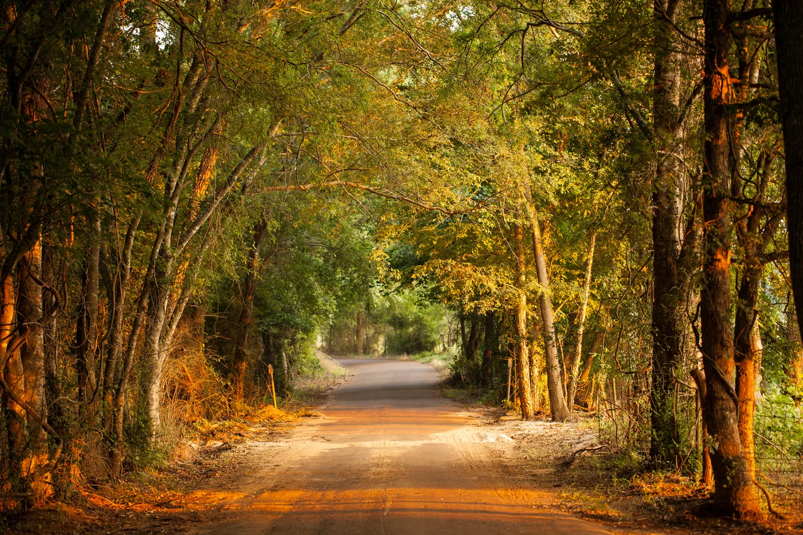
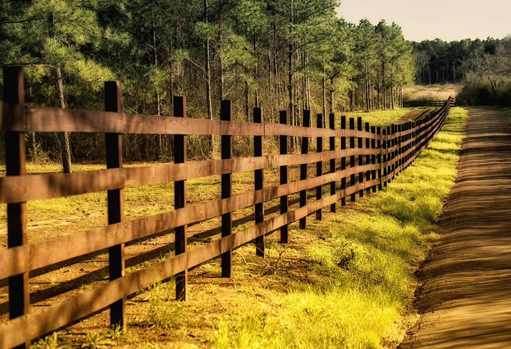
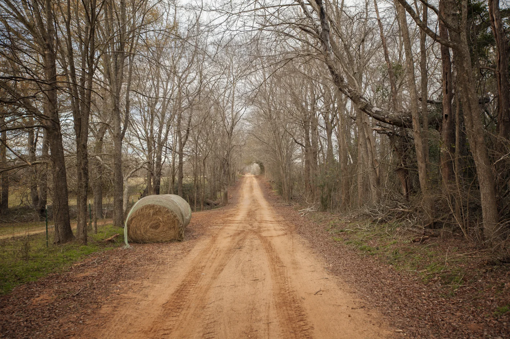
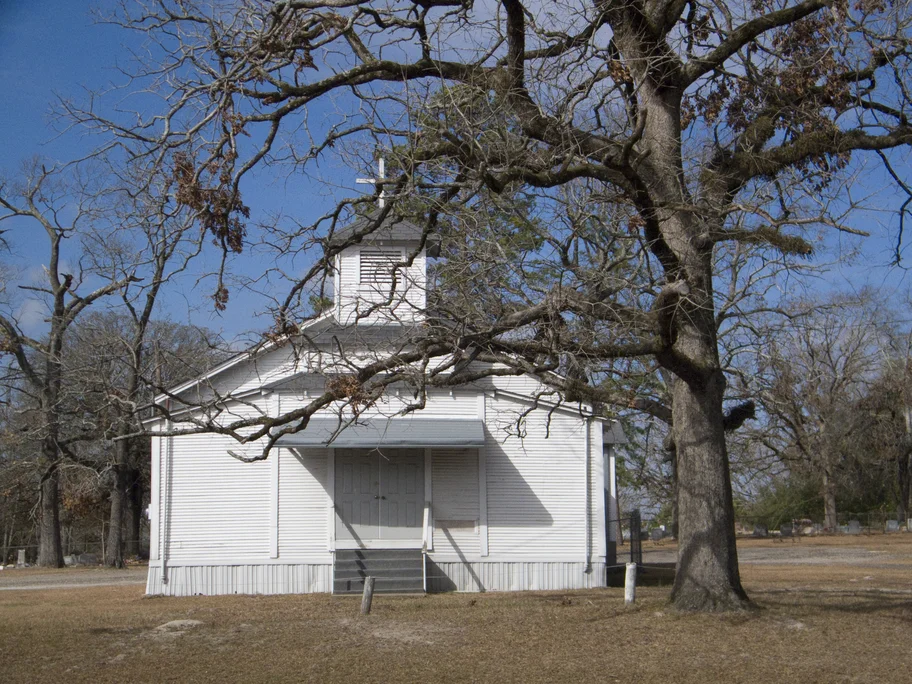
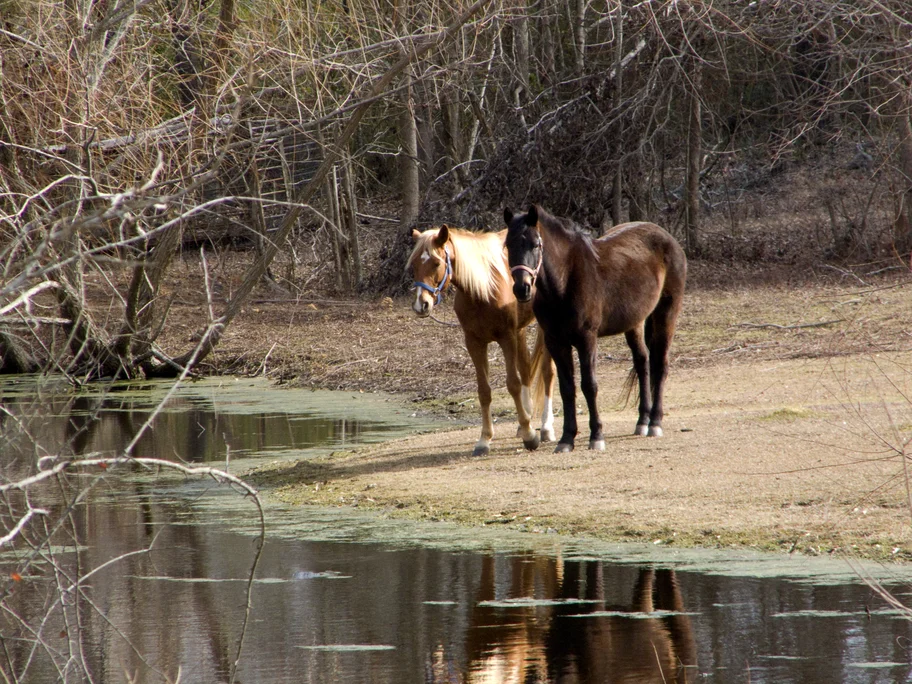
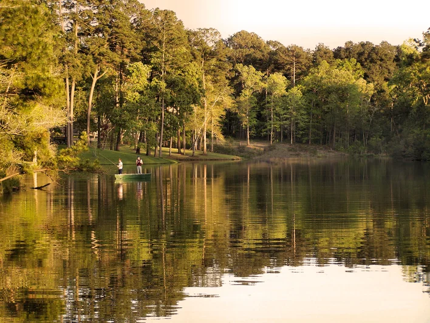

A scenic road winding through lush greenery, offering a peaceful escape into nature.

A rustic border fence along a quiet country road, symbolizing rural boundaries.

A barren yet mysteriously inviting road, drawing adventurers into the unknown.

The historic church of Nacogdoches, standing as a testament to the town's rich heritage.

Two majestic horses grazing peacefully in the verdant fields of Nacogdoches.

A serene lake in Nacogdoches, offering a tranquil retreat and picturesque views.
 Isaac Cano
Isaac Cano